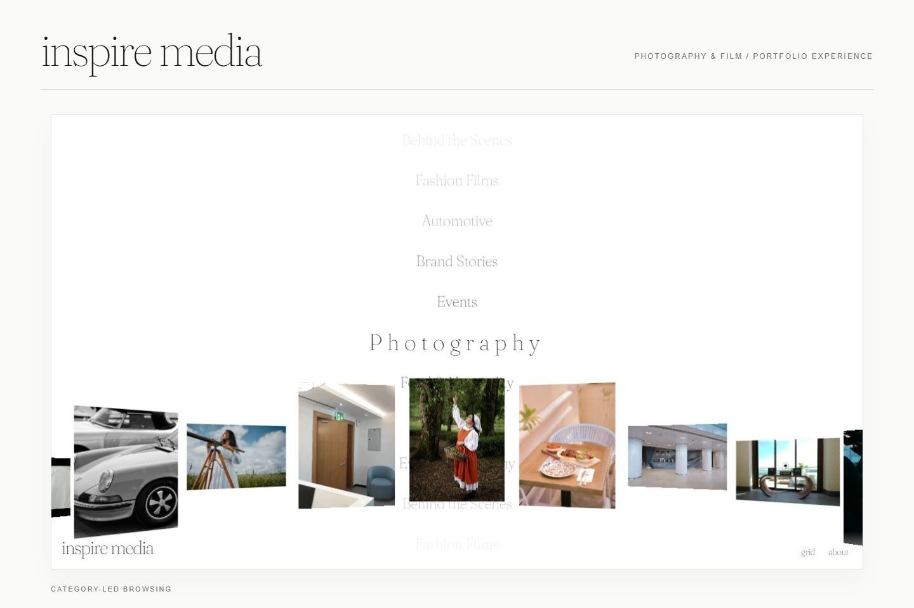
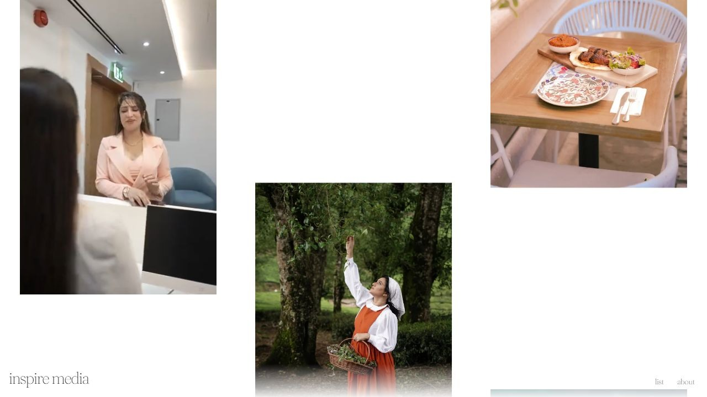
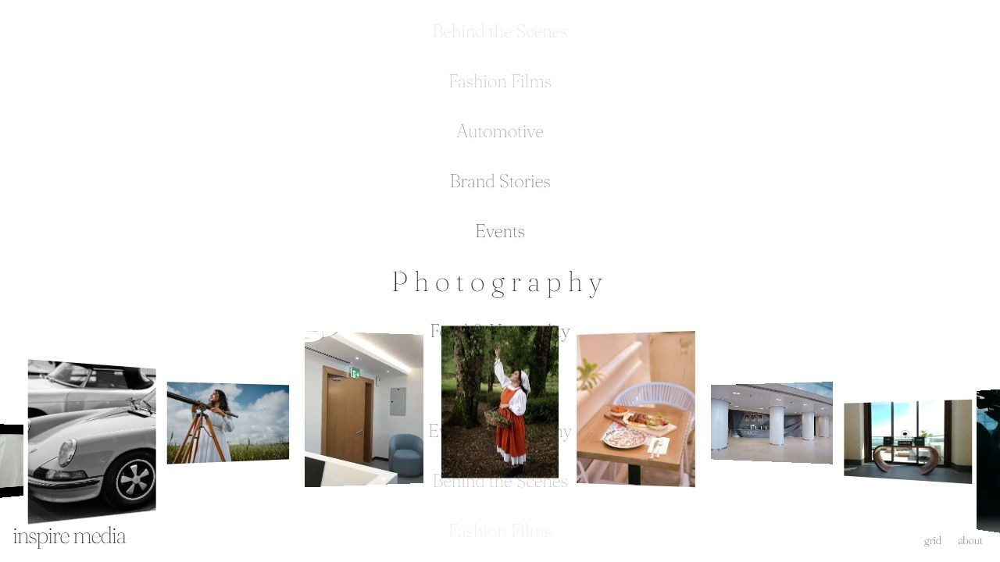
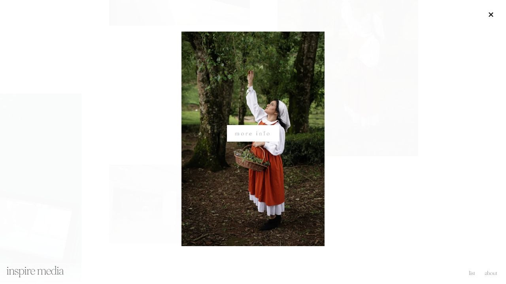
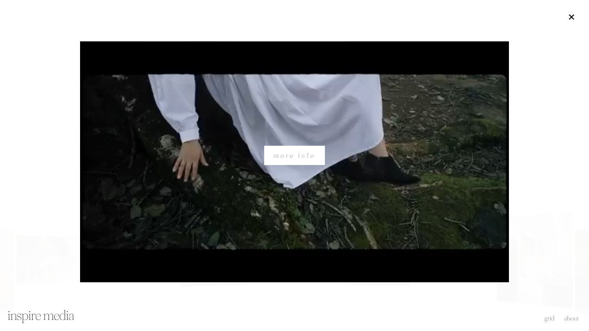
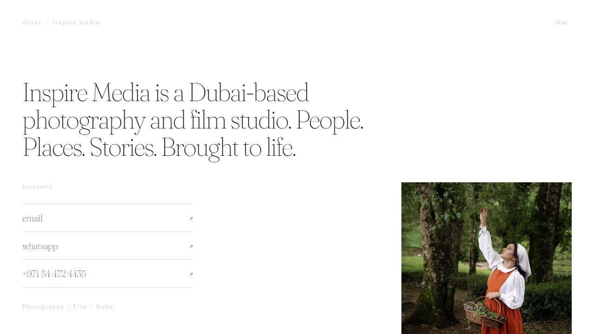
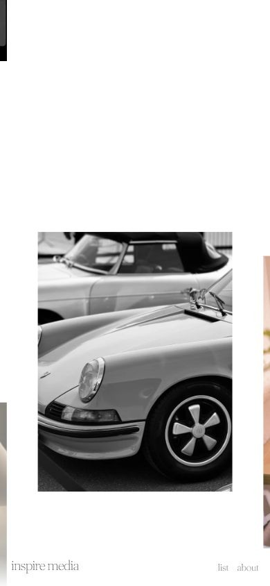
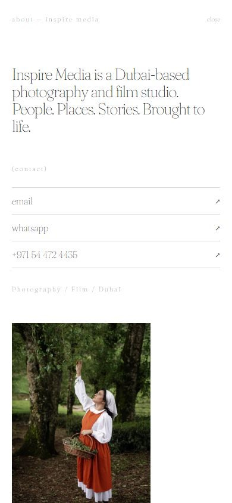

Arrive → Move through the gallery → Open a collection
The opening introduces the wordmark and thumbnails before revealing the gallery. Visitors can drag or scroll to explore the mix of photography and film.
DESIGN & DEVELOPMENT / CREATIVE PORTFOLIO / 2026
A minimal portfolio for a Dubai-based photography and film studio, designed to put its output in view and give both media types a consistent way to be explored.

MY CONTRIBUTIONUI/UX design & development
PROJECT TIMELINEOne day
PRODUCTPhotography & film portfolio
01 / THE BRIEF
The client wanted a minimal portfolio for Inspire Media’s photography and film. Previous work needed to be visible without a long introduction, so visitors could understand the studio’s output through the work itself.
Photography and film also needed consistent browsing interactions. The focus was a shared route into the portfolio, rather than two separate experiences.
02 / THE DIRECTION
I designed and developed the experience in one day. The direction pairs a white canvas and restrained typography with an exploratory gallery, letting the photographs and films provide the colour and visual character.
A category list offers another route through the same body of work. Both entry points lead into collections, with an About page for the studio introduction and contact details.
03 / THE EXPERIENCE
The opening introduces the wordmark and thumbnails before revealing the gallery. Visitors can drag or scroll to explore the mix of photography and film.
Category titles and their thumbnail previews move together. The list gives visitors a named route into the same collections, from fashion films to photography.
These routes describe the implemented experience. They do not represent findings from a user study or a measured conversion funnel.
04 / THE VISUAL IDENTITY
White surfaces, charcoal text and fine grey rules make room for the imagery. This case study uses the same restrained accents in its buttons, labels, borders and cards.
Fraunces Thin carries the website’s wordmark, category titles and studio introduction. Its light serif character gives the minimal interface an editorial tone.
A light touch around expressive work.05 / THE DESIGN DECISIONS
The gallery introduces a range of output immediately. It lets visitors encounter photographs and film previews before choosing a collection.
Photography and film share the same browsing pattern: explore, open a collection and view the work. Films add playback within that shared structure.
The list pairs category names with synchronised thumbnails. It supports browsing by the kind of work a visitor wants to see.
About and view-switching controls stay in the footer. The studio introduction brings contact details together so visitors can continue the conversation.
06 / THE INTERFACE
The gallery and category list provide the overview. Photography and film collections give individual work more space, while About introduces the studio behind it.





The gallery continues on mobile, with persistent view and About controls. The studio introduction and contact links adapt to a vertical layout.


Screens are retained website captures from the project. The live gallery moves, so its visible thumbnails can differ from these stills.
07 / OUTCOME & REFLECTION
The completed experience brings gallery exploration, category browsing, photography collections, film playback and studio information into one portfolio. Design and development were completed in one day.
A useful next evaluation would examine whether first-time visitors discover dragging and the list view, understand the collection structure and find the studio’s contact details comfortably.
The role, brief and one-day timeline are confirmed project details. No formal user study, measured performance improvement or business impact is claimed here.
08 / EXPLORE THE WORK
Visual and interaction reference: Brady Perron. Independently implemented for Inspire Media; no affiliation is claimed.